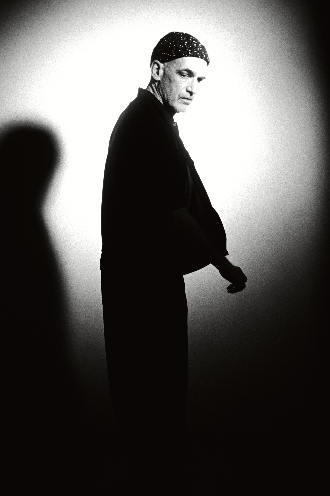
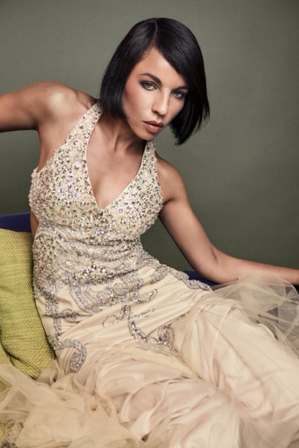
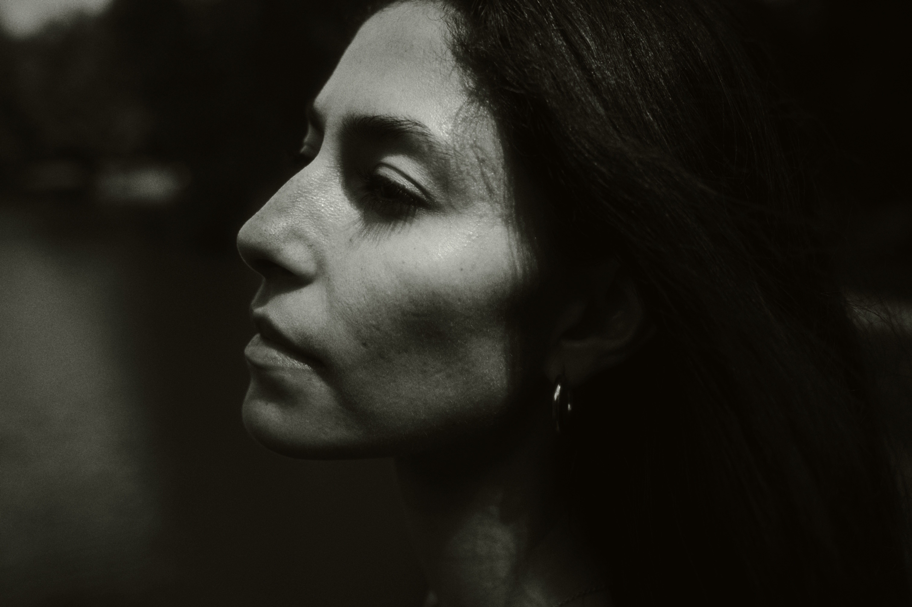
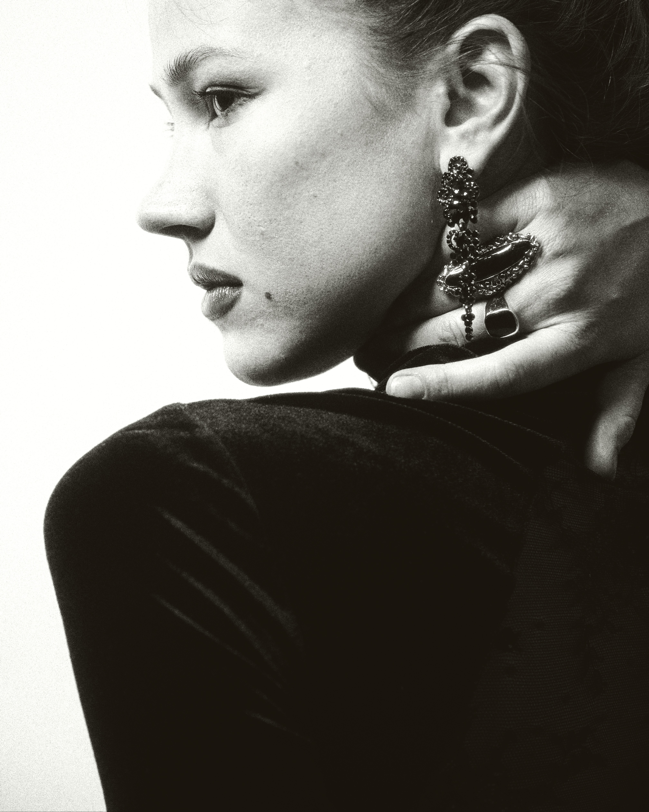

Direction
We define the concept, atmosphere, styling, required perspectives and intended result together. References can be used to establish direction without simply copying existing images.
Steffen Lauterbach · Bern, Switzerland
Every shoot begins by defining its purpose.
Depending on the goal, we work in one of three clearly separated formats: you commission me, we create a free project together, or I book you for one of my own photographic works.

01 / Purpose before process
The purpose of the shoot determines who sets the direction, what is delivered and how the images may be used.
Clear expectations protect everyone involved. Before a date is confirmed, we define whether the session is a commissioned production, a free creative collaboration or a paid model booking for one of my own projects.
These formats are not interchangeable. A collaboration is not a free portfolio commission, and a model booking is not a shared production in which both sides pursue separate visual goals.
Your objectives define the production.
02A shared project built around my photographic work.
03The model is hired for a defined artistic concept.
A rule applying to every format
Unless a written limitation is agreed before the shoot, I may select, edit, publish and otherwise use photographs from every session for my portfolio, website, social media, publications, exhibitions and other artistic, editorial or self-promotional purposes. The model's own delivery and usage rights depend on the selected working format.
02 / Commissioned sessions
01
I work on assignment for models, agencies, artists, brands and private clients.
The purpose, visual direction and intended use are agreed before the shoot. The production is created for your requirements rather than as part of one of my free photographic projects. Unless a written limitation is agreed in advance, I may also select, edit and use photographs from the session for my portfolio, website, social media, publications, exhibitions and other self-promotional or artistic purposes.
We define the concept, atmosphere, styling, required perspectives and intended result together. References can be used to establish direction without simply copying existing images.
Sessions are booked in two-hour blocks. A studio base fee applies to productions in my Bernapark studio. Additional time, styling, hair and make-up, travel, locations or special production requirements are agreed in advance.
The number of final edited images, selection process, delivery schedule and usage rights are defined as part of the booking. Only the agreed final selection is delivered. RAW files, test images and rejected photographs are not included unless this is explicitly added to the commission.
Suitable for

03 / Free photographic projects
02
A creative collaboration is participation in a photographic project — not a free commissioned session.
The starting point is my visual language, an existing series or a concept I want to develop. The strongest work emerges when both sides understand the intention and consciously want to become part of it.
Openness, presence and active participation matter. Ideas and references are welcome, but the project is not designed around a list of portfolio wishes or predetermined social-media images.
Styling, clothing, hair and make-up are discussed beforehand. Unless otherwise agreed, models prepare these themselves and bring options that support the photographic direction.
I select, edit and sequence the photographs I publish under my name. The model may receive the unedited RAW files from the collaboration and may independently select, edit and publish them. Both sides may use the photographs according to their own needs without requiring approval for every individual publication. Authorship, credits and any exceptional limitations are agreed before the shoot.
A free collaboration gives both sides independent creative use of the material — it is not a free commissioned portfolio session.

04 / Models booked for my work
03
For selected projects, I hire professional models to realise a defined photographic concept.
In this format, the model is booked for my production. The creative direction, styling framework, image selection and publication are determined by the project. The model's role, fee and usage are agreed before the booking is confirmed.
The concept already exists or has a clearly defined direction. The booking is based on whether a model's presence, movement, character and experience fit the work.
Fee, duration, travel, accommodation, styling, hair and make-up, locations and usage are discussed individually and confirmed before the shoot. There is no undefined “small modelling fee”. Unless otherwise agreed in writing, the fee compensates the model's participation and does not restrict my later artistic, editorial or self-promotional use of the photographs.
The images are created for my artistic or editorial production. Final selection, editing, sequencing and publication remain part of my photographic authorship. The model does not automatically receive the full image material; any photographs supplied for personal use are agreed as part of the booking.

05 / Respect & trust
Clarity is part of trust.
A professional shoot requires respect for personal boundaries, agreed concepts and the purpose for which images are created. No change of direction, styling or level of exposure should happen through pressure or ambiguity. Consent to create an image and the rights to use that image are clarified before the session.
Questions and limits can be expressed at any time. Agreement to one image, outfit or situation never automatically means agreement to another.
Before every shoot we clarify
Which of the three working formats applies
Who defines the creative direction
The intended images and use
Styling, hair, make-up and level of exposure
Selection, editing and delivery
Publication, crediting and reciprocal usage rights
Fees, expenses and production costs
Who will be present during the shoot
Trust is not assumed. It is built through clarity, consent and reliability.
06 / About the work
I do not photograph people as classical models, but as personalities. I am interested in presence, character, form and the small moments between obvious gestures.
My work moves between portrait, form study and documentary observation. I work slowly and consciously. The aim is not to produce as many looks as possible, but to create a small number of strong images with a coherent photographic language.


07 / Practical questions
No. When your requirements determine the concept and result, this is a commissioned session and is booked in two-hour blocks.
Yes. Send a current portfolio and explain what connects you to my work. A collaboration is considered when there is a strong fit with a current or upcoming project.
Yes, when I book a model for my own production. The fee and all relevant conditions are agreed individually before confirmation.
Not always. Presence, openness and reliability can matter more than experience. Professional model bookings, however, may require specific skills or agency experience.
Yes, according to the agreed format. In every format I retain the right to use photographs from the session for my own artistic, editorial and self-promotional work unless a written limitation is agreed beforehand. In free collaborations, the model may also receive and independently use the unedited RAW files.
This can be discussed beforehand. For certain projects, especially with younger models, a parent, guardian, stylist or another agreed person should be present.
08 / Studio & contact
My 103 m² studio is located in Bernapark, Deisswil near Bern. It has a five-metre ceiling, a large window front and fully darkenable rooms for daylight and controlled studio-light productions.
Please state which working format you are interested in, your intended dates, location, concept and relevant portfolio or references.
Maybe our collaboration begins with clarity.